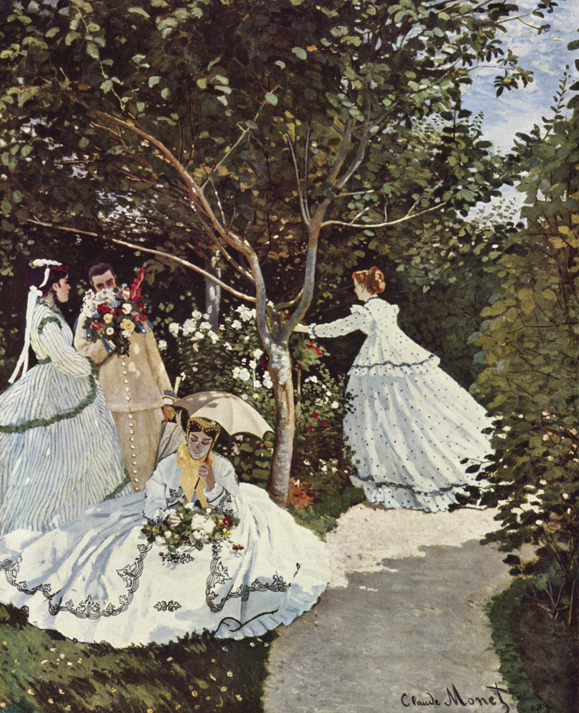

Tidy Bits
The blog where I tell my geek adventures
Mujeres en el jardín
Me pregunto qué pensaría Monet al pintar este cuadro. Estoy seguro de que era consciente del importante paso que estaba dando alejándose de las normas clásicas que hasta la fecha habían reinado en la pintura, pero quizás no le habría dado importancia, quizás se encontraba demasiado ocupado intentando acabarlo a tiempo para el Salón de Paris o defendiéndose de las burlas por pintar cuadros tan grandes.

Me fascina la luz de cuadro. Llena toda la escena y nos lleva de la mano de una chica a otra, mientras juguetea con sus vestidos. Casi se puede sentir el calor.